来长沙之前，我听说了很多关于它的形容词：热辣、喧闹、不夜城、网红之都。
我原以为，我会在人群中被推着走，在霓虹灯里迷失方向。
可当我真正走进这座城市，却发现它悄悄把另一面留给了我——
安静、古朴、吹着风就能发呆一下午。
第一站，我去了岳麓书院。
其实也说不上“去”，更像是“寻”。沿着东方红广场往山里走，人群渐渐散开，喧嚣被高高的院墙挡在了外面。
在踏入岳麓书院之前，我首先遇见的，是伟大的革命导师——毛泽东。
东方红广场上，毛泽东的雕像高高矗立。他面朝东方，衣摆被风扬起。我没有急着赶路，而是站在他脚下仰头看了看。那一刻忽然觉得，进书院读书之前，先读懂他，也很重要。
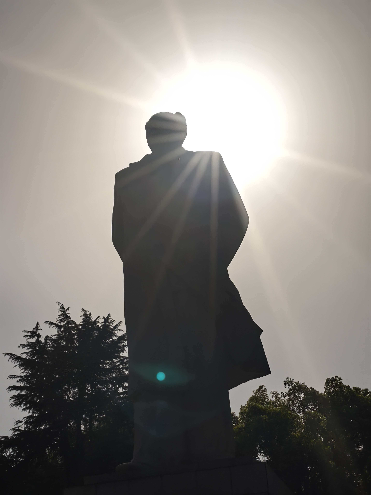
踏进大门那一刻，空气突然变得沉静。
石板路并不光滑，上面有深深浅浅的痕迹——那是千百年来无数双鞋底磨出来的。我放慢脚步，生怕惊扰了什么。
穿过讲堂，走过半学斋，我在御书楼前的回廊里站了很久。
风吹过庭院里的竹丛，沙沙作响。我想象着几百年前的某个午后，也许也有一个像我一样的年轻人，靠在柱子上，翻着一卷书，偶尔抬头看看天。
他不曾想过，几百年后会有人站在同样的位置，替他看同一片天。
时间在这里不是流逝，是叠加。
我没有许愿，只是静静地呼吸了一口“惟楚有材”的空气。那里面夹杂着木头、泥土和旧纸张的味道。
走出书院后门的时候，回头看了一眼门匾。忽然觉得，千年也不过是一瞬间的事。
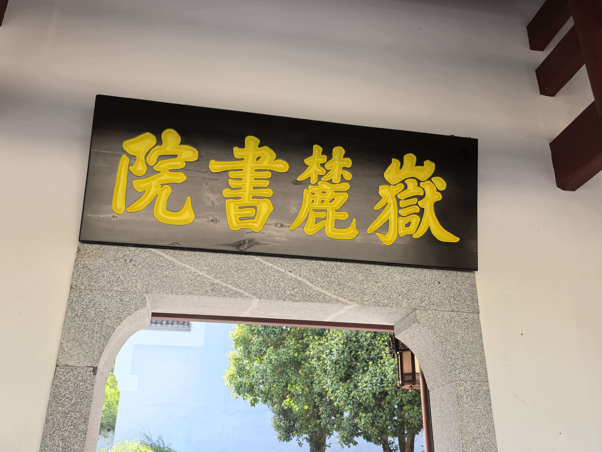
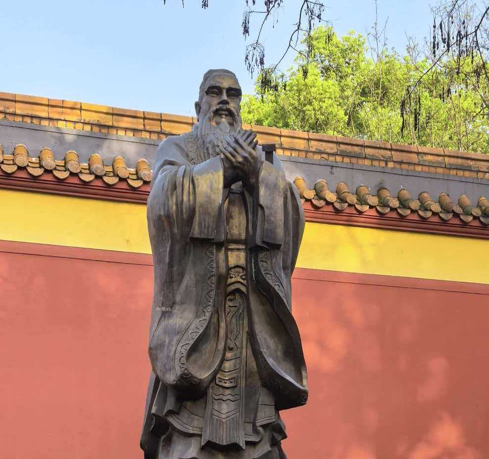
从岳麓书院侧门出来，没走几步就到了文庙。当地人更爱叫它“夫子庙”。门口的石狮已经被摸得光滑，香炉里还燃着几炷残香。我走进去，大成殿里供奉着孔子的塑像，两侧是颜回、曾子等先贤。没有书院的喧闹，这里更冷清，只有风穿过殿檐下的铃铛，发出细微的响声。我站在殿前，忽然想起《论语》里的句子：“饭疏食饮水，曲肱而枕之，乐亦在其中矣。”千年前的读书人，大概也是这样，在清贫中守着一点信念。我在夫子庙待了很久，走的时候，心里比来时多了一点什么，又好像什么都没有。也许这就是所谓“朝圣”吧——不是得到答案，只是确认还有人走过同样的路。
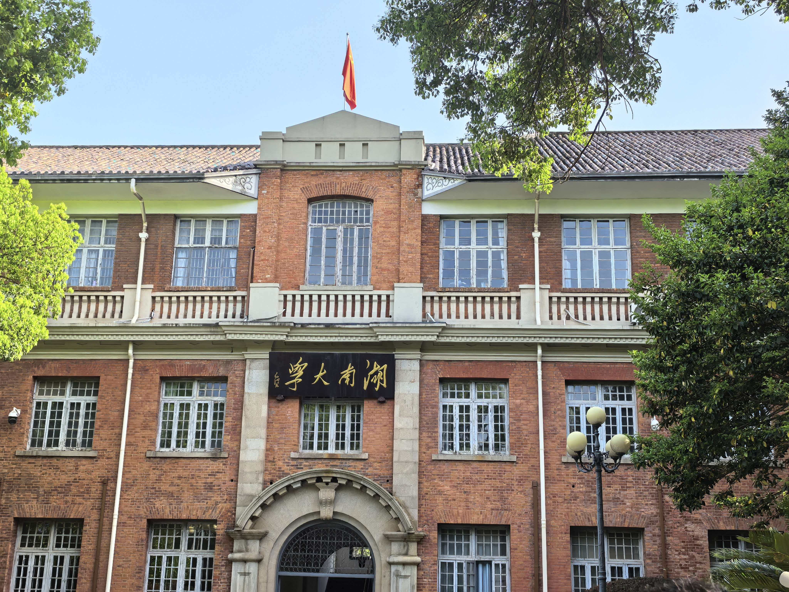
从夫子庙出来，沿着登高路往下走，不经意就拐到了湖南大学。那栋红楼安静地立在路边，红砖墙，绿窗棂，在午后的光线里显得有些陈旧，却又特别好看。我没有进去，只是在楼前站了一会儿。能听见教室里隐隐约约的讲课声，还有学生在走廊上说笑。我忽然觉得，一百年前，会不会也有年轻人像我一样，在这里徘徊，心里装着说不清的迷茫和渴望。时光带走了很多人，但这栋楼还在这里，继续看着一代又一代的人来了又走。我拍了张照片，没有发朋友圈。有些地方，来过就好，不必声张。
我十分期待着去橘子洲头。在网上看过无数张照片：青年毛泽东的雕像迎着朝阳，湘江在脚下奔涌，橘子洲像一艘永不沉没的船。我想象自己站在洲头，风吹起头发，眼里全是辽阔。我以为那会是一个明亮的、充满力量的地方。
而当我真正站在雕像脚下，他比我想象中更巨大，也更沉默。我仰头望着他，那张年轻的脸，目光如炬，望向东方。那一刻，我确实被击中了——不是震撼，是一种说不清的、滚烫的东西涌上来。他二十七岁写《沁园春·长沙》，问苍茫大地谁主沉浮。而我呢？我连自己明天要什么都不敢确定。
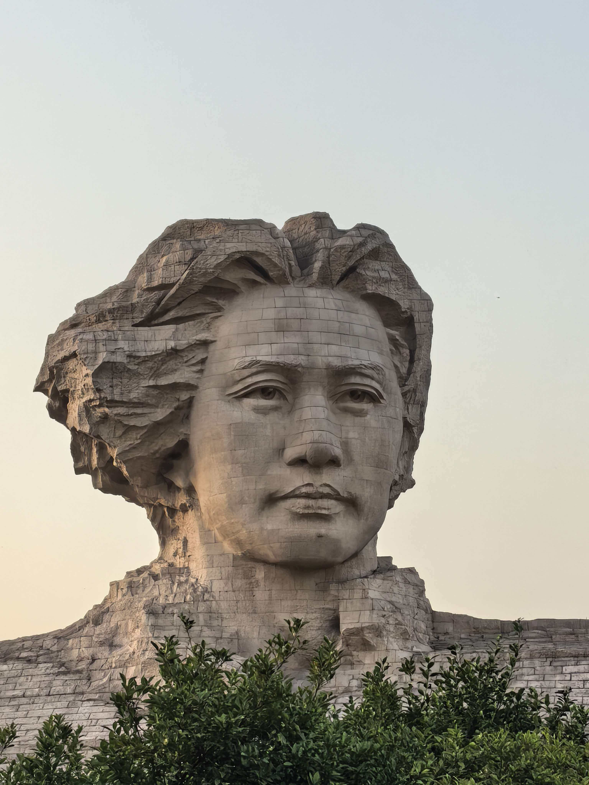
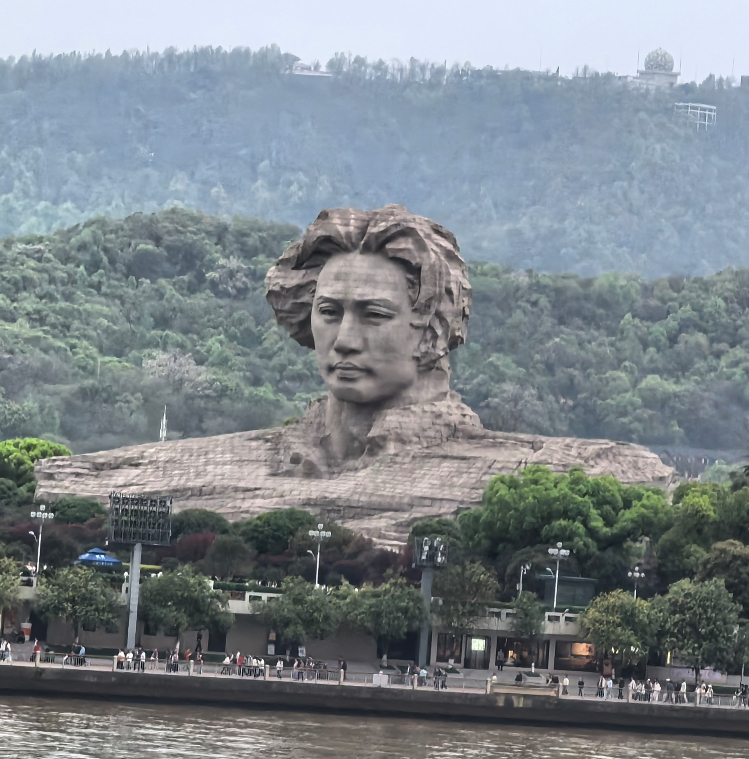
到了晚上，灯亮起来的瞬间，我更看清了自己的影子有多小。他站在那里，像一座山，风吹不动，时间也拿他没办法。而我只是一个普通人，会在深夜焦虑，会在人群里迷失，会为一句歌词流泪。雕像不会老，可我会。他的理想还在湘江上飘着，而我的理想，常常连一个晚上都撑不过。
耳机里循环到《一万次悲伤》。旋律出来那一刻，鼻子突然酸了。“一万次悲伤，依然会有Dream。”可我的Dream是什么呢？
我想起歌词里那句：“每一颗眼泪，是一万道光。”我没有哭，只是觉得胸口有什么东西堵着。被激励是真的，意识到自己渺小也是真的。原来伟大不是用来模仿的，是用来仰望的。而仰望的时候，人会不由自主地缩成一团。
风不是很大，但仍吹得我头疼。我缩了缩衣领，忽然觉得，橘子洲头给了我一点光，也给了我更深的阴影。离开的时候，我回头看了一眼。雕像还是那样站着，一动不动。他不会知道，有一个年轻人，被他点亮了一瞬，又被自身的渺小淹没了一路。
“一万次悲伤，依然会有Dream。”歌还在唱。我苦笑了一下，也许激励和渺小从来就不矛盾——正因为看见山有多高，才知道自己只是尘埃。但尘埃也想借着风，飘在天空中俯瞰大地。
来到岳麓山，我买了张缆车票上山。车厢晃晃悠悠，车厢并没有缝隙，可这风却吹得我有点冷。城市在后退，声音在消失，我觉得自己不是在上山，而是在离开什么。
山顶的风很大，我没待太久。下山选了步行。因为我认为我需要也必须真正地走完这条路。
我先去了岳麓古寺。寺不大，香火淡淡的，殿檐下的风铃被吹响，叮的一声，又叮的一声。我没有烧香，只是在院子里站了站，在心里说了一句谁都听不见的话。
继续往下走，路边安静地立着一些革命先烈的墓碑。我停下来，一个一个看。他们那么年轻就走了，为了一个没有亲眼看到的明天。而我站在这里，为自己那点不值一提的迷茫，忽然觉得有些惭愧。
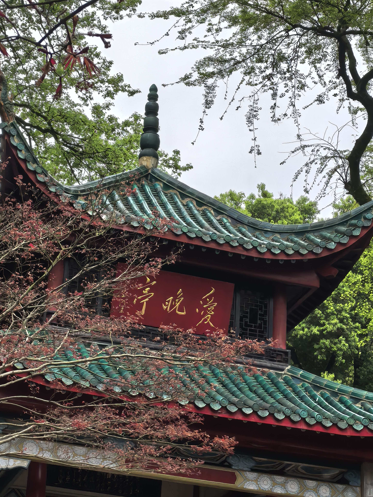
走到爱晚亭的时候，天有些暗了。亭子十分吵闹，没有红叶，往来拜访的人许多。我在远方看了一会儿，只觉得冷。
最后一段路，我走得很慢。夕阳从树叶间漏下来，黄黄的，旧旧的。忽然明白，岳麓山不是来治愈我的——它只是允许我走一段、坐一会儿、发一场呆。它什么都不说，沉默地收下所有人的叹息。
下山时天快黑了。我一个人走着，心里没有更轻松，也没有更沉重。就是觉得，有些路，只能自己走完。
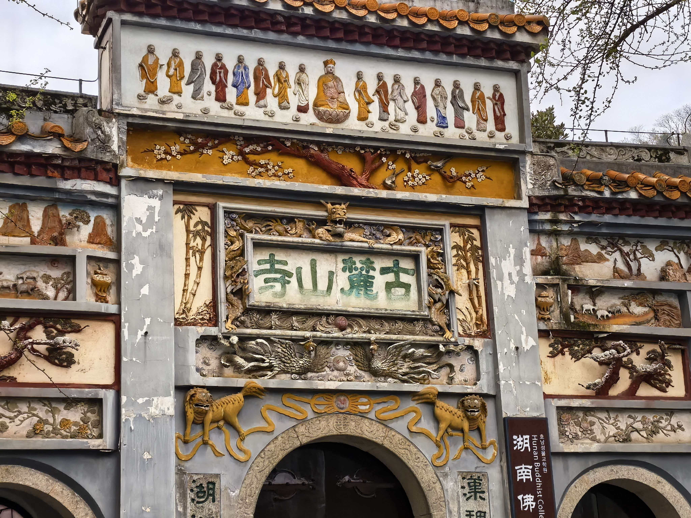
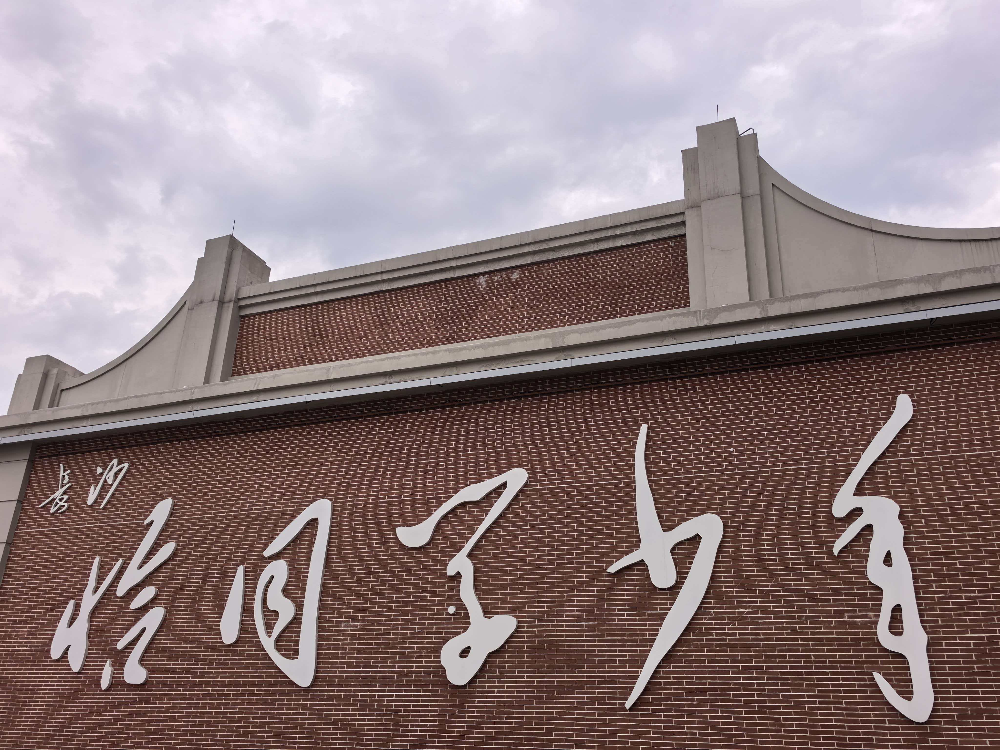
最后，我来到了恰同学少年广场。站在这里，忽然想起课本里那页被翻旧的文章。“恰同学少年，风华正茂”——当年背的时候不懂，现在懂了，却已经不算是少年了。我看着广场上那些年轻的脸，他们笑着、闹着，像当年的我，又不像。风还是那个方向吹来的风，只是吹过的人，换了一茬又一茬。我也曾是那个“同学少年”，只是走着走着，就把自己走成了“同学中年”。但没关系，书页会黄，湘江不会停。我也还在路上，哪怕慢一点。
《沁园春·长沙》
独立寒江，湘江北去，橘子洲头。
看万山红遍，层林浸染；漫江碧透，百舸争流。
鹰击长空，鱼翔浅底，万类霜天竞自由。
怅寥廓，问苍茫大地，谁主沉浮？
携来百侣曾游，忆往昔峥嵘岁月稠。
恰同学少年，风华正茂；书生意气，挥斥方遒。
指点江山，激扬文字，粪土当年万户侯。
曾记否，到中流击水，浪遏飞舟？
🍂 每一次出发都是与世界的重新相识 · 长沙篇 🍂
从湘江的风里转身，我踏上了北上的列车。窗外景色从丘陵变成一望无际的平原，麦田蔓延到天际。中原，书本里“最早的中国”，我来了。
没有想象中的尘土飞扬，只有一种沉默的、大地的气味。我想，这次我不再借风，而是想在这片黄土上，踩出自己的脚印，再吃一碗热腾腾的面，听听黄河的声音。
驻马店，名字听起来就像古道西风里的歇脚处。这里曾是南北往来的驿站，如今仍然保留着一种不急不慢的节奏。我在这一站停了几天，去了几个地方，每一处都像翻开了一页泛黄而又温柔的故事。
我去了天中山，一座几乎没人提起的小土丘，却是古人测日影、定天地中心的地方。爬上去不过五分钟，站在顶上，四周是无尽的麦田。风很大，吹得我眯起眼睛。那一刻我忽然理解了“天中”——不是地理的绝对中心，而是一种万物平衡的温柔。山不在高，有仙则灵；这里没有神仙，只有风、土和一种让人安心的踏实感。
天中山实在算不上山，更像一个大土丘。可站上去的那一刻，四面麦浪翻涌到天边，风从很远的地方吹来，没有一点遮挡。古人在这里测日影、定节气，把这里当作“天地之中”。我不懂天文，却忽然觉得——所谓“中”，不是中心，而是平衡。就像此刻，我站在小小的土丘上，被无边的平原托着，心里莫名踏实。原来有些高度，不需要千米，能看清自己就好。
嵖岈山比我想象中要奇。那些石头像是被谁随意堆起来的，却又堆出了各种形状——有的像猴子，有的像老翁，有的像一本翻开的书。我沿着山路慢慢走，阳光从石缝里漏下来，碎成一片一片。听说《西游记》曾在这里取景，我倒觉得不需要神话加持，光是那些石头和野花，就已经足够耐看了。山顶的风很野，吹得人想学鸟叫。我一个人坐在石头上，看着远处的平原，忽然觉得，孤独也可以很辽阔。
嵖岈山的石头是古怪的，像谁随手捏完又忘了收。有的似猴，有的似佛，有的半悬在空中，看着摇摇欲坠。我沿着石阶慢慢走，阳光把影子切得零碎。山顶的风很野，吹得人想大叫。找了一块平整的石头坐下，看远处村落像火柴盒一样小。那一刻觉得，山不在乎你记不记得它的名字，它只是让你坐一会儿，然后继续赶路。
博山湖藏在山间，水很清，蓝得有点不像河南。我到的时候接近黄昏，湖面没有一丝波纹，像一块被遗忘的镜子。岸边有钓鱼的老人，一动不动，几乎要和石头融为一体。我没有说话，只是坐在湖边，看天色从蓝变成橘，再变成紫。水把一切都吸了进去，包括我的心事。离开的时候，我在心里对湖说：谢谢你替我存了一会儿安静。
博山湖不大，藏在山坳里，水清得能看见底下的石头。我到时是午后，几乎没有游客。湖面静得像一块凉好的青玉，偶尔有风，皱一下就平了。坐在湖边发呆是最好的事——不用想什么，水会替你消化所有情绪。看见水鸟低低掠过，翅膀沾了一点水光。忽然觉得，有些地方不需要故事，光是在那里，就已经很好。
南海禅寺是亚洲最大的佛教寺院之一，走进去第一感觉不是大，而是静。殿宇层层叠叠，香火的味道很淡，偶尔有僧人穿着灰袍经过，脚步轻得像是怕踩疼了影子。我在大雄宝殿前站了很久，抬头看檐角的铃铛被风吹动，发出泠泠的声响。那一刻忽然觉得，所谓修行，也许不过是学会和风铃一样——风来了就响，风走了就停。我没有许愿，只是在心里默念了一句：愿路过的人，都能被轻轻接住。
傍晚在老街吃了一碗芝麻叶面条，做法朴实，芝麻叶的微苦混着面香。老板娘说：“俺们这儿以前就是驿站，赶路的都吃这个。”我忽然觉得，千百年来路过驻马店的人，都吃过这么一碗朴素的面，填饱肚子再赶路。而我也是其中一个，只是从马车变成了火车。原来旅人的孤独，古今都一样。
信阳被称为“北国江南”。我去了南湾湖，坐船到茶岛。满山茶树一层层铺开，绿得让人心软。采茶阿姨戴着草帽，手指飞快地掐下嫩芽。我讨了一杯刚炒好的毛尖，坐在木廊下，看着湖面起了薄雾。热水冲下去，豆香扑鼻，入口却清甜得不像话。
雨突然就落下来了，细细密密打在茶叶上。我没有躲，索性听雨发呆。原来河南也可以这么湿润，这么慢。那一刻我忘了自己在北方，只觉得心里像被茶汤洗过一样，安静得能听见每一滴雨落地的声音。离开信阳时，背包里多了半斤毛尖——我想把这里的柔软，带到下一站去。
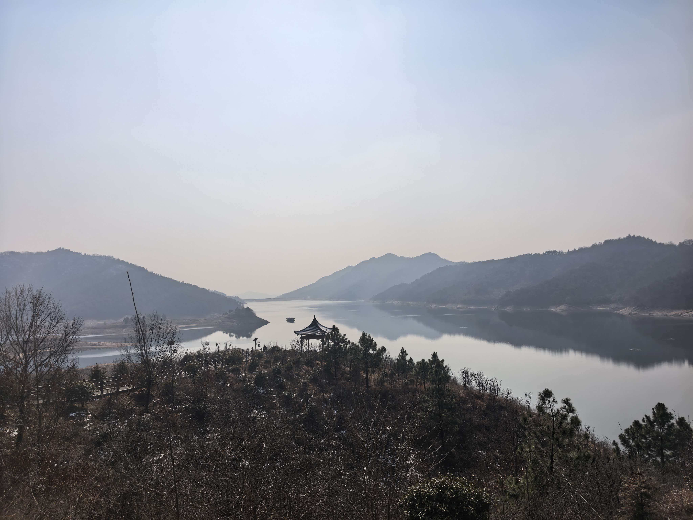
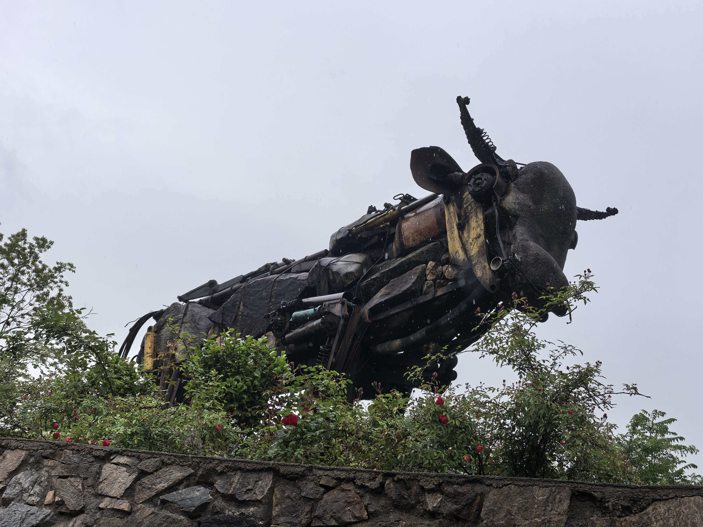
到郑州的第一个念头，就是去看黄河。我站在花园口，河水浑黄，不急不缓地往东流。比想象中安静，没有咆哮，只有沉甸甸的泥沙味。我在河滩上坐了很久，捡了一块被河水磨圆的石头。旁边有个老人放风筝，风筝线很长，几乎看不见尽头。他告诉我：“黄河从来不说话，但它什么都见过。”
晚上回到市区，找了一家老店吃烩面。羊肉汤底浓郁醇厚，面条宽厚筋道，呼噜呼噜吸一大口，整个胃都暖了。墙上挂着郑州的老照片，几十年前的火车站，人群拥挤。我想起那首歌里唱的“郑州郑州，天天挖沟”，可如今这座城市早已高楼林立。烩面的味道没变，就像黄河水一样，流走了时间，留下了滋味。我忽然明白，为什么说“一碗面，一座城”——对于普通人来说，能好好吃碗面，就是生活最真实的幸福。
许昌是曹魏故都。我去了春秋楼，据说是关羽夜读《春秋》的地方。楼不高，红墙黛瓦，院子里有一棵老柏树，枝干扭曲如龙。傍晚的光穿过树叶，把影子投在青石板上。我坐在石阶上，想象着千年前那个红脸将军，在这个院子里，读着书，心里装着义气与远方。
夜晚在曹魏古城闲逛，游客不多，灯笼亮起来，像是回到了某个朝代。我吃了一碗热凉粉，辣得额头冒汗。旁边有个老爷爷在唱河南坠子，我听不懂词，只觉得调子里有黄土和黄河的苍凉。我没有拍照，只是站在那里听了很久。许昌不像洛阳那么出名，但它让我觉得，三国不只是故事，而是真实存在过的、热乎乎的日子。
走进胖东来，忽然理解了什么叫“被在乎”。不必买什么，光是那种暖暖的、把人当家人的温柔，就足以让心软下来。原来一座城最动人的名片，不是千年风云，而是寻常日子里毫不吝啬的善意。我坐在门口的休息区，看人们提着菜篮、牵着孩子，脸上带着从容的笑——许昌不止有三国，还有让人想留下的、暖烘烘的人间。
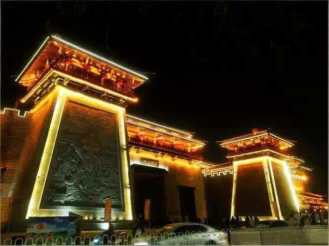
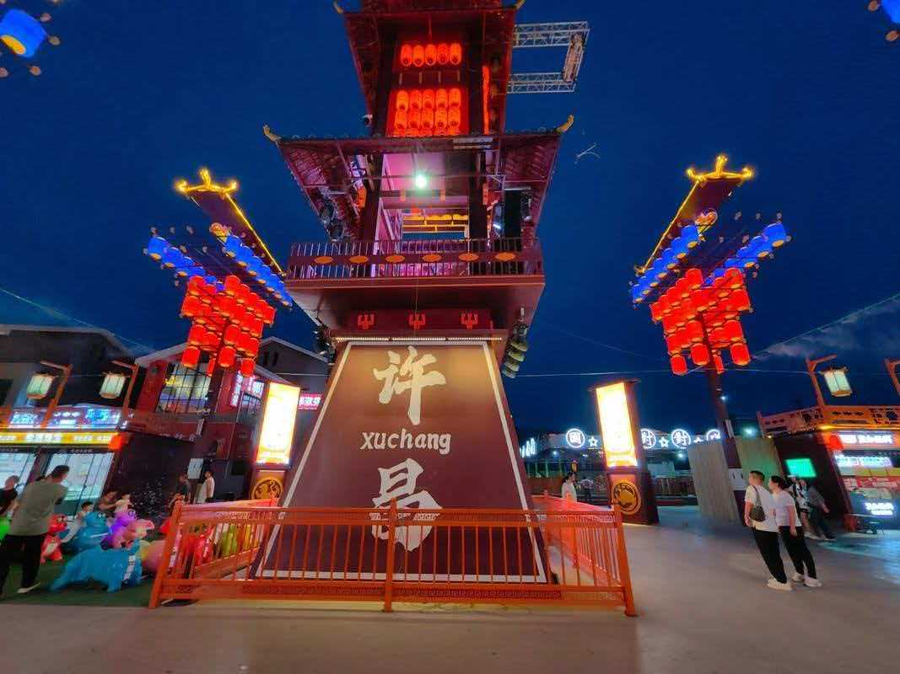
从驻马店的天中山、奇石与水寺，到信阳的茶山烟雨，从郑州的黄河岸，到许昌的三国夜风与胖东来的暖光里——我好像终于明白了什么叫“中原”。它不是博物馆里的青铜器，也不是教科书里的王朝更迭；它是每一个普通人的一日三餐，是黄河边一个老人的风筝线，是面碗里热腾腾的蒸汽，也是超市里一句真心实意的“欢迎光临”。
在河南，我没有借风，而是站在了风里。这片土地不说话，却给了我一种踏实的、沉甸甸的感觉。原来，无论走多远，我们终究会被一碗面、一条河、一段旧城墙，甚至一家超市，轻轻接住。
“君不见黄河之水天上来，奔流到海不复回。”
我站在黄河边，没有饮酒，也没有吟诗。
只是看着那浑黄的水，默默想：
我也是一粒被河水冲刷过的沙，
有幸在这里，停了一停。
🍂 每一次出发都是与世界的重新相识 · 河南四城记 🍂